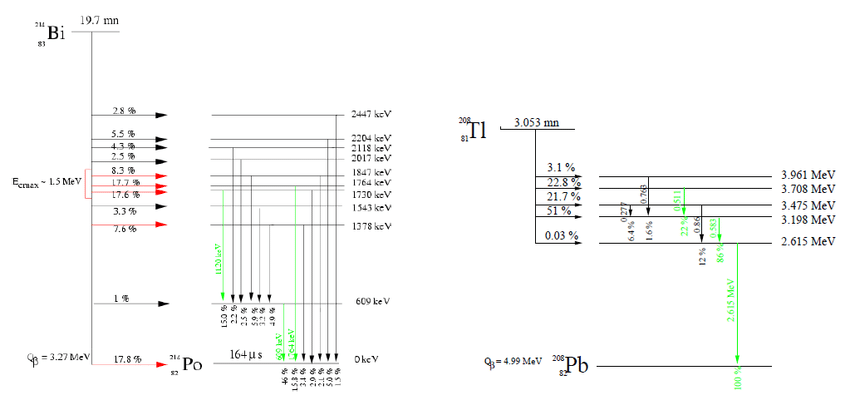

Fanal, a neutrino-less beta decay experiment
Contents
Fanal, a neutrino-less beta decay experiment#
An open exercise#
Calibration#
USC, Master de Física, Física de Partícula II#
J. A. Hernando-Morata,
with the help of J. Muñoz, J. M. Benlloch, B. Palmeiro, G. Díaz
February 2021
%matplotlib inline
%load_ext autoreload
%autoreload 2
Importing modules#
import numpy as np
import tables as tb
import pandas as pd
import matplotlib.pyplot as plt
import scipy.constants as constants
import warnings
warnings.filterwarnings('ignore')
# REMEMBER TO ADD THE FOLDER TO PYTHONPATH
import os
import sys
dirpath = os.getcwd()[:-9]
print('add path to PYTHONPATH : ', dirpath)
sys.path.insert(0, os.path.abspath(dirpath))
add path to PYTHONPATH : /Users/hernando/work/docencia/master/Fisica_Particulas/USC-Fanal-v2
import core.pltext as pltext # extensions for plotting histograms
import core.hfit as hfit # extension to fit histograms
import core.utils as ut # generic utilities
import ana.fanal as fn # analysis functions specific to fanal
import collpars as collpars # collaboration specific parameters
pltext.style()
---------------------------------------------------------------------------
ModuleNotFoundError Traceback (most recent call last)
/var/folders/56/_pmdccc97ljb_l3v3s6gkrxm0000gn/T/ipykernel_83237/19475220.py in <module>
3 import core.utils as ut # generic utilities
4 import ana.fanal as fn # analysis functions specific to fanal
----> 5 import collpars as collpars # collaboration specific parameters
6 pltext.style()
ModuleNotFoundError: No module named 'collpars'
Indications#
Objective#
Estimate the energy resolution and the energy scale of the detector. For that, we will fit some peaks a 208Tl calibration sample to its know tabulated energy.
Tasks:#
Open the data file (HDF) and access the mock calibration data (cal) obtained with a 208Tl source.
Fit the energy of the main track (track0) to the main photo-peak (2.615 MeV) and double-scape peak.
Fit the energy of the secon track (track1) to other Tl gamma lines
Calibrate the measured energy of the peacks with respect the tabulated energy.
Notes:#
The main photo-peak is at 2.615 MeV. This peak can suffer Compton, Bremsstrahlung and pear production. A double-scape peak is expected at 2.615 - 2 * 511 keV.
There are other minor 208Tl gamma lines at 860, 583 and 511 keV.
Sometimes the photo-peak is produced with an associated 126Xe X-ray of 30 keV.
Main Parameters#
coll = 'test_alpha'
erange = fn.erange
eroi = fn.eroi
eblob2 = fn.eblob2
print('Data From : {:s}'.format(coll))
print('Energy range : ({:6.3f}, {:6.3f}) MeV'.format(*erange))
print('Blob-2 energy threshold : {:6.3f} MeV'.format(eblob2))
print('Energy RoI range : ({:6.3f}, {:6.3f}) MeV'.format(*eroi))
Data From : test_alpha
Energy range : ( 2.400, 2.700) MeV
Blob-2 energy threshold : 0.400 MeV
Energy RoI range : ( 2.430, 2.480) MeV
Access the data#
dirpath = '/Users/hernando/work/docencia/master/Fisica_Particulas/USC-Fanal/data/'
filename = 'fanal_' + coll + '.h5'
print('Data path and filename : ', dirpath + filename)
calib = pd.read_hdf(dirpath + filename, key = 'data/tl208')
Data path and filename : /Users/hernando/work/docencia/master/Fisica_Particulas/USC-Fanal/data/fanal_test_alpha.h5
list of variables#
calib
| E | num_tracks | num_voxels | track0_E | track0_voxels | track0_length | blob1_E | blob2_E | track1_E | track1_voxels | track1_length | |
|---|---|---|---|---|---|---|---|---|---|---|---|
| 564546 | 2.615397 | 2.0 | 27 | 2.312862 | 26.0 | 144.587124 | NaN | NaN | 0.302535 | 1.0 | 0.000000 |
| 376309 | 2.604736 | 5.0 | 24 | 1.741889 | 20.0 | 90.631288 | NaN | NaN | 0.481098 | 1.0 | 0.000000 |
| 469518 | 2.393022 | 2.0 | 27 | 2.360668 | 26.0 | 140.393303 | NaN | NaN | 0.032353 | 1.0 | 0.000000 |
| 360901 | 2.473315 | 2.0 | 29 | 2.284131 | 28.0 | 122.871850 | NaN | NaN | 0.189184 | 1.0 | 0.000000 |
| 729146 | 2.436927 | 5.0 | 29 | 1.614206 | 23.0 | 108.759626 | NaN | NaN | 0.528430 | 2.0 | 9.900239 |
| ... | ... | ... | ... | ... | ... | ... | ... | ... | ... | ... | ... |
| 795608 | 3.026290 | 5.0 | 34 | 2.161288 | 26.0 | 134.215376 | NaN | NaN | 0.425306 | 1.0 | 0.000000 |
| 448958 | 2.618126 | 4.0 | 21 | 1.971669 | 16.0 | 93.781639 | NaN | NaN | 0.300519 | 1.0 | 0.000000 |
| 614419 | 2.622842 | 3.0 | 28 | 2.047454 | 25.0 | 117.405271 | NaN | NaN | 0.305801 | 2.0 | 9.821184 |
| 244986 | 2.434591 | 6.0 | 29 | 1.645987 | 22.0 | 115.888528 | NaN | NaN | 0.234870 | 1.0 | 0.000000 |
| 16734 | 2.606699 | 5.0 | 28 | 2.302236 | 24.0 | 63.397773 | NaN | NaN | 0.268334 | 1.0 | 0.000000 |
343648 rows × 11 columns
Histogram the variables#
We are drawing the variables only in the relevant range (2.6, 2.8 MeV)
#pltext.df_inspect(calib, ncolumns = 3)
Energy calibration, identifying the peaks#
# utitility function
def efit(enes, bins, erange, guess = None):
guess = (len(enes), np.mean(enes), 20., 10., 0.) if guess is None else guess
sel = ut.in_range(enes, erange)
pars, cpars = pltext.hfit(enes[sel], bins, fun = 'gausline', guess = guess, range = erange);
return pars, cpars
Photo-peak and double-escape#
Study the energy of the track-0.
Fit the photo-peak and the double-escape peak
enes = 1e3 * ut.remove_nan(calib.track0_E.values) # energy in keV and remove NaN
calpars = []
subplot = pltext.canvas(4)
subplot(1)
pltext.hist(calib.track0_E, 100, range = (1., 2.7));
subplot(2)
erange = (2600, 2650)
guess = (1e3, 2615, 20., 20., 0.)
bins = np.linspace(2550, 2650, 100)
pars, cpars = efit(enes, bins, erange, guess);
calpars.append( (pars, cpars))
erange = (2550-50, 2650 - 50)
guess = (1e2, 2615 - 50, 20., 20., 0.)
pars, cpars = efit(enes, bins, erange, guess);
subplot(3)
erange = (1550, 1650)
bins = np.linspace(*erange, 100)
guess = (1e3, 1560, 20., 20., 0.)
pars, cpars = efit(enes, bins, erange, guess)
calpars.append( (pars, cpars))
Other Tl peaks#
Study the energy of track-1.
Identify the peaks.
Fit then to a gaussian.
enes = 1e3 * ut.remove_nan(calib.track1_E.values) # energy in keV and remove NaN
subplot = pltext.canvas(6)
subplot(1)
pltext.hist(enes, 100, range = (0., 1500.));
subplot(2)
erange = (840, 880.)
bins = np.linspace(*erange, 80)
guess = (1e2, 860, 5., 0., 0.)
pars, cpars = efit(enes, bins, erange, guess)
calpars.append( (pars, cpars))
subplot(3)
xrange = (490., 600.)
pltext.hist(enes, 100, range = xrange)
subplot(4)
erange = (570, 600.)
bins = np.linspace(450, 600, 100)
guess = (1e2, 585, 5., 0., 0.)
pars, cpars = efit(enes, bins, erange, guess)
calpars.append( (pars, cpars))
erange = (490, 540.)
guess = (1e2, 511, 5., 0., 0.)
pars, cpars = efit(enes, bins, erange, guess)
calpars.append( (pars, cpars))
Energy Scale calibration#
Relate the measured peaks positions to the tabulated one.
Fit to a line.
If there are deviation respect unity use this line to calibrate your detector.
xvals = np.array([511., 583., 860., 2615. - 2 * 511, 2615.])
calpars.reverse()
yvals = np.array([val[0][1] for val in calpars])
eyvals = np.array([val[1][1] for val in calpars])
plt.errorbar(xvals, yvals, yerr = 1.5* eyvals, ls = '', marker = 'o')
xs = np.linspace(0., 2800, 100)
plt.plot(xs, xs); plt.grid();
import scipy.optimize as optimize
def fline(x, a, b):
return a * x + b
#par, cov = optimize.curve_fit(fline, xvals, yvals, sigma = 1.5 * eyvals, p0 = (1., 0.), absolute_sigma = True)
par, cov = optimize.curve_fit(fline, xvals, yvals, sigma = 1.5* eyvals, p0 = (1., 0.))
chi2 = np.sum(((fline(xvals, *par) - yvals))**2)
epar = np.sqrt(np.diag(cov))
print(r'calibration scale : {0:6.4f} +/- {1:6.4f}'.format(par[0], epar[0]))
print(r'calibration threshold : {0:6.4f} +/- {1:6.4f}'.format(par[1], epar[1]))
print(r'resolution near Qbb : {0:6.3f} % FWHM '.format(235. * abs(calpars[-1][0][2])/calpars[-1][0][1]))
calibration scale : 0.9996 +/- 0.0001
calibration threshold : 0.3636 +/- 0.1919
resolution near Qbb : 0.478 % FWHM
Additional notes#
These are the decay diagrams of 214Bi and 208Tl.
Several lines can be observed in the total energy and track-0 and track-1 energies.
Notice that the 1.615 MeV gamma can produrce electron-positron pairs and a double-scape peak when the photons produced by the positron capture scape the detector, the double-scape peak has an energy of \(1.615 - 2 \; 0.511\) MeV
